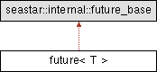

Detailed Description
class future< T >
A representation of a possibly not-yet-computed value.
A future represents a value that has not yet been computed (an asynchronous computation). It can be in one of several states:
- unavailable: the computation has not been completed yet
- value: the computation has been completed successfully and a value is available.
- failed: the computation completed with an exception.
methods in future allow querying the state and, most importantly, scheduling a continuation to be executed when the future becomes available. Only one such continuation may be scheduled.
A future should not be discarded before it is waited upon and its result is extracted. Discarding a future means that the computed value becomes inaccessible, but more importantly, any exceptions raised from the computation will disappear unchecked as well. Another very important consequence is potentially unbounded resource consumption due to the launcher of the deserted continuation not being able track the amount of in-progress continuations, nor their individual resource consumption. To prevent accidental discarding of futures, future is declared [[nodiscard]] if the compiler supports it. Also, when a discarded future resolves with an error a warning is logged (at runtime). That said there can be legitimate cases where a future is discarded. The most prominent example is launching a new fiber, or in other words, moving a continuation chain to the background (off the current fiber). Even if a future is discarded purposefully, it is still strongly advisable to wait on it indirectly (via a gate or semaphore), control their concurrency, their resource consumption and handle any errors raised from them.
- Template Parameters
-
T A type to be carried as the result of the future, or void for no result. An available future<void> only contains a success/failure indication (and in the case of a failure, an exception).
- Examples
- file_demo.cc.
#include <seastar/core/future.hh>

Classes | |
| struct | finally_body |
| struct | finally_body< Func, true > |
| struct | finally_body< Func, false > |
Public Types | |
| using | value_type = internal::future_stored_type_t<T> |
| The data type carried by the future. | |
| using | tuple_type = internal::future_tuple_type_t<value_type> |
| using | promise_type = promise<T> |
| The data type carried by the future. | |
| using | get0_return_type = typename future_state::get0_return_type |
Public Member Functions | |
| future (future &&x) noexcept | |
| Moves the future into a new object. | |
| future (const future &)=delete | |
| future & | operator= (future &&x) noexcept |
| void | operator= (const future &)=delete |
| value_type && | get () |
| gets the value returned by the computation | |
| std::exception_ptr | get_exception () noexcept |
| void | wait () noexcept |
| bool | available () const noexcept |
| Checks whether the future is available. | |
| bool | failed () const noexcept |
| Checks whether the future has failed. | |
| template<typename Func, typename Result = typename internal::future_result<Func, T>::future_type> requires std::invocable<Func, T> || (std::same_as<void, T> && std::invocable<Func>) | |
| Result | then (Func &&func, std::source_location sl=std::source_location::current()) noexcept |
| Schedule a block of code to run when the future is ready. | |
| template<typename Func, typename Result = futurize_t<internal::result_of_apply_t<Func, T>>> | |
| requires ::seastar::CanApplyTuple< Func, T > Result | then_unpack (Func &&func, std::source_location sl=std::source_location::current()) noexcept |
| Schedule a block of code to run when the future is ready, unpacking tuples. | |
| template<std::invocable< future > Func, typename FuncResult = std::invoke_result_t<Func, future>> | |
| futurize_t< FuncResult > | then_wrapped (Func &&func, std::source_location sl=std::source_location::current()) &noexcept |
| Schedule a block of code to run when the future is ready, allowing for exception handling. | |
| template<std::invocable< future && > Func, typename FuncResult = std::invoke_result_t<Func, future&&>> | |
| futurize_t< FuncResult > | then_wrapped (Func &&func, std::source_location sl=std::source_location::current()) &&noexcept |
| void | forward_to (promise< T > &&pr) noexcept |
| Satisfy some promise object with this future as a result. | |
| template<std::invocable Func> | |
| future< T > | finally (Func &&func, std::source_location sl=std::source_location::current()) noexcept |
| future | or_terminate (std::source_location sl=std::source_location::current()) noexcept |
| Terminate the program if this future fails. | |
| future | discard_result (std::source_location sl=std::source_location::current()) noexcept |
| Discards the value carried by this future. | |
| template<typename Func> requires std::is_invocable_r_v<future<T> ,Func, std::exception_ptr> || (std::tuple_size_v<tuple_type> == 0 && std::is_invocable_r_v<void, Func, std::exception_ptr>) || (std::tuple_size_v<tuple_type> == 1 && std::is_invocable_r_v<T, Func, std::exception_ptr>) || (std::tuple_size_v<tuple_type> > 1 && std::is_invocable_r_v<tuple_type ,Func, std::exception_ptr>) | |
| future< T > | handle_exception (Func &&func, std::source_location sl=std::source_location::current()) noexcept |
| Handle the exception carried by this future. | |
| template<typename Func> | |
| future< T > | handle_exception_type (Func &&func, std::source_location sl=std::source_location::current()) noexcept |
| Handle the exception of a certain type carried by this future. | |
| void | ignore_ready_future () noexcept |
| Ignore any result hold by this future. | |
Class Documentation
◆ future::finally_body
| struct future::finally_body |
Member Function Documentation
◆ available()
|
inlinenoexcept |
Checks whether the future is available.
- Returns
trueif the future has a value, or has failed.
◆ discard_result()
|
inlinenoexcept |
Discards the value carried by this future.
Converts the future into a no-value future<>, by ignoring any result. Exceptions are propagated unchanged.
◆ failed()
|
inlinenoexcept |
Checks whether the future has failed.
- Returns
trueif the future is available and has failed.
◆ finally()
|
inlinenoexcept |
Finally continuation for statements that require waiting for the result. I.e. you need to "finally" call a function that returns a possibly unavailable future. The returned future will be "waited for", any exception generated will be propagated, but the return value is ignored. I.e. the original return value (the future upon which you are making this call) will be preserved.
If the original return value or the callback return value is an exceptional future it will be propagated.
If both of them are exceptional - the seastar::nested_exception exception with the callback exception on top and the original future exception nested will be propagated.
See then() for lifetime and call semantics.
◆ forward_to()
|
inlinenoexcept |
Satisfy some promise object with this future as a result.
Arranges so that when this future is resolve, it will be used to satisfy an unrelated promise. This is similar to scheduling a continuation that moves the result of this future into the promise (using promise::set_value() or promise::set_exception(), except that it is more efficient.
- Parameters
-
pr a promise that will be fulfilled with the results of this future.
◆ get()
|
inline |
gets the value returned by the computation
Requires that the future be available. If the value was computed successfully, it is returned (as an std::tuple). Otherwise, an exception is thrown.
If get() is called in a seastar::thread context, then it need not be available; instead, the thread will be paused until the future becomes available.
◆ handle_exception()
requires std::is_invocable_r_v<future<T> ,Func, std::exception_ptr> || (std::tuple_size_v<tuple_type> == 0 && std::is_invocable_r_v<void, Func, std::exception_ptr>) || (std::tuple_size_v<tuple_type> == 1 && std::is_invocable_r_v<T, Func, std::exception_ptr>) || (std::tuple_size_v<tuple_type> > 1 && std::is_invocable_r_v<tuple_type ,Func, std::exception_ptr>)
|
inlinenoexcept |
Handle the exception carried by this future.
When the future resolves, if it resolves with an exception, handle_exception(func) replaces the exception with the value returned by func. The exception is passed (as a std::exception_ptr) as a parameter to func; func may return the replacement value immediately (T or std::tuple<T...>) or in the future (future<T...>) and is even allowed to return (or throw) its own exception.
The idiom fut.discard_result().handle_exception(...) can be used to handle an exception (if there is one) without caring about the successful value; Because handle_exception() is used here on a future<>, the handler function does not need to return anything.
◆ handle_exception_type()
|
inlinenoexcept |
Handle the exception of a certain type carried by this future.
When the future resolves, if it resolves with an exception of a type that provided callback receives as a parameter, handle_exception_type(func) replaces the exception with the value returned by func. The exception is passed (by reference) as a parameter to func; func may return the replacement value immediately (T or std::tuple<T...>) or in the future (future<T...>) and is even allowed to return (or throw) its own exception. If exception, that future holds, does not match func parameter type it is propagated as is.
◆ ignore_ready_future()
|
inlinenoexcept |
Ignore any result hold by this future.
Ignore any result (value or exception) hold by this future. Use with caution since usually ignoring exception is not what you want
◆ or_terminate()
|
inlinenoexcept |
Terminate the program if this future fails.
Terminates the entire program is this future resolves to an exception. Use with caution.
◆ then()
requires std::invocable<Func, T> || (std::same_as<void, T> && std::invocable<Func>)
|
inlinenoexcept |
Schedule a block of code to run when the future is ready.
Schedules a function (often a lambda) to run when the future becomes available. The function is called with the result of this future's computation as parameters. The return value of the function becomes the return value of then(), itself as a future; this allows then() calls to be chained.
If the future failed, the function is not called, and the exception is propagated into the return value of then().
The passed function is moved (if an rvalue) or copied (if an lvalue) into the continuation, so their lifetime is automatically extended until the continuation runs (but not further - if the function itself may suspend you will need to ensure its lifetime is sufficiently long).
- Parameters
-
func - function to be called when the future becomes available, unless it has failed.
- Returns
- a
futurerepresenting the return value offunc, applied to the eventual value of this future.
◆ then_unpack()
|
inlinenoexcept |
Schedule a block of code to run when the future is ready, unpacking tuples.
Schedules a function (often a lambda) to run when the future becomes available. The function is called with the result of this future's computation as parameters. The return value of the function becomes the return value of then(), itself as a future; this allows then() calls to be chained.
This member function is only available when the payload is std::tuple; The tuple elements are passed as individual arguments to func, which must have the same arity as the tuple.
If the future failed, the function is not called, and the exception is propagated into the return value of then().
- Parameters
-
func - function to be called when the future becomes available, unless it has failed.
- Returns
- a
futurerepresenting the return value offunc, applied to the eventual value of this future.
◆ then_wrapped()
|
inlinenoexcept |
Schedule a block of code to run when the future is ready, allowing for exception handling.
Schedules a function (often a lambda) to run when the future becomes available. The function is called with the this future as a parameter; it will be in an available state. The return value of the function becomes the return value of then_wrapped(), itself as a future; this allows then_wrapped() calls to be chained.
Unlike then(), the function will be called for both value and exceptional futures.
- Parameters
-
func - function to be called when the future becomes available,
- Returns
- a
futurerepresenting the return value offunc, applied to the eventual value of this future.
◆ wait()
|
inlinenoexcept |
Wait for the future to be available (in a seastar::thread)
When called from a seastar::thread, this function blocks the thread until the future is available. Other threads and continuations continue to execute; only the thread is blocked.
The documentation for this class was generated from the following file:
- seastar/core/future.hh
Generated by